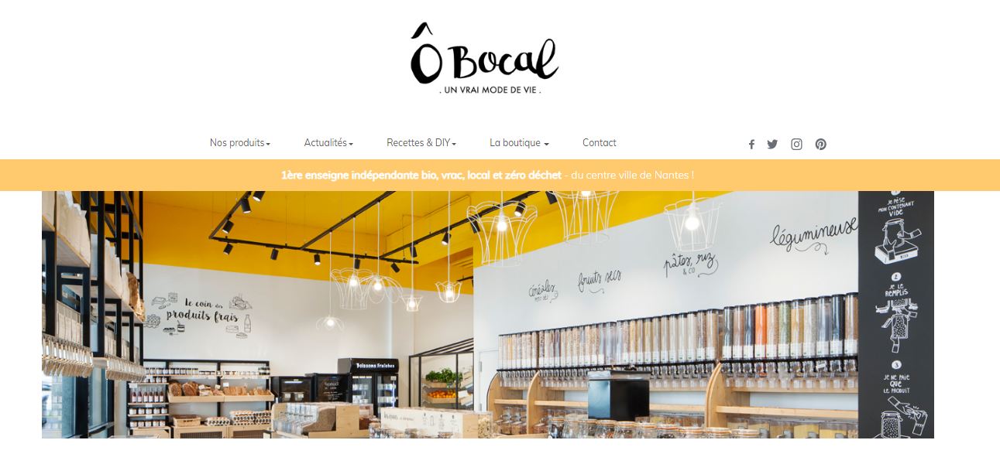

O bocal, une épicerie zéro déchet !
Depuis quelques années, la vente en vrac séduit de plus en plus les consommateurs. Pour en savoir plus sur ce marché en plein boom, j’ai décidé de m’intéresser à la première épicerie zéro déchet crée à Nantes : Ô bocal.

La naissance d'ô Bocal
Johanna est la fondatrice d’ô bocal, elle a grandi en Bretagne, proche de la nature. Pour elle, ça a toujours été logique de consommer en faisant le moins de mal à la planète possible. Depuis qu'elle est arrivée à Nantes, elle essaie de consommer de façon éthique et en cohérence avec ses valeurs. Mais à l'époque, il fallait courir un peu partout, dans plusieurs épiceries, chez plusieurs commerçants et producteurs pour avoir une consommation responsable. Ce genre de modèle fonctionne à court terme pour les personnes n'ayant pas trop d'obligations, mais ce n'est pas vraiment un modèle viable et accessible pour tout le monde. Johanna et ses amis ont donc eu l'idée, en octobre 2014 de fonder la première épicerie zéro déchet et indépendante de Nantes. Une épicerie qui permet de réduire voire d'éliminer ses emballages, de privilégier le local et le lien humain avec les producteurs, les fournisseurs et les clients.
Pour en savoir plus sur cette épicerie, je me suis tournée vers Leslie, une épicière d’O bocal. Elle est dans l’aventure depuis 2017 et a accepté de répondre à mes questions.
INTERVIEWBonjour Leslie ! Tout d’abord, pourquoi ce nom : Ô Bocal ?
Le nom « Ô Bocal » est un nom précieux car il a été trouvé suite à un travail collectif de réflexion ayant eu lieu lors d'un atelier de brainstorming animé par Make-Sense. C'est un nom qui fait référence à la logique de la boutique, qui incite les clients à venir faire leurs courses avec leurs propres contenants, dont les bocaux font partis.
En quoi Ô Bocal est-elle une marque éco-responsable ?
Ô Bocal est une entreprise qu'on peut dire « éco-responsable » car notre engagement est fort de sens sur plusieurs points :
- La volonté de réduire son impact environnemental en proposant aux clients de venir avec leurs propres contenants et donc d'éviter les déchets chez eux. De notre côté, nous achetons à nos producteurs et fournisseurs dans des contenants de taille importante pour réduire la quantité d'emballage à la livraison ou directement dans des contenants consignés.
- Nous privilégions le lien humain en travaillant le plus possible en direct avec les producteurs et productrices. Nous avons d'ailleurs des cartes de nos producteurs et productrices régionaux derrière les caisses de nos deux magasins. Nos fruits, légumes, pains, céréales, légumineuses, farines, biscuits, miels, vins, jus (...) sont français, et pour la plupart régionaux.
- Nous souhaitons être proches de nos clients et clientes. Nous ne voulons pas être un supermarché où personne ne se parle et essayons d'avoir un maximum d'échanges avec les personnes qui viennent faire leurs achats chez nous. Le but est que la « corvée des courses » redevienne un plaisir, un moyen de discussions et de partage. Et pour ça, nous avons quand même un point commun : la volonté de réduire son impact environnemental négatif et de vouloir un monde meilleur.
- Nous privilégions l'éthique, nous avons une charte à suivre quand nous choisissons les personnes avec qui nous souhaitons travailler dans le but de proposer des produits responsables, engagés, goûtus et éthiques, que ce soit au niveau de l'humain, des animaux et de l'environnement. Et n'oublions pas que nous créons des emplois qui ont du sens pour l'avenir.
- Aussi, notre démarche va au-delà, avec d'autres engagements, par exemple nous faisons des dons à associations que nous savons engagées et nous avons choisi un fournisseur d'électricité plus écologique…
Comment définissez-vous le zéro déchet ?
Je ne crois pas qu'il y ait de définition universelle du zéro déchet, mais pour moi, c'est un engagement concret que l'on peut faire au quotidien. L'idée, c'est de réduire au maximum les déchets que l'on produit. Pas seulement les emballages alimentaires, mais aussi les emballages liés aux produits d'hygiène, d'entretien, à tous les accessoires que nous possédons... Je vois ça en lien avec le minimalisme, car le meilleur déchet est celui que l'on ne crée pas. Ca peut aussi devenir une démarche plus globale, en réfléchissant à l'ensemble de sa consommation et des impacts de tous ses achats, de l'alimentaire aux vêtements, en passant par les achats plaisir et les cadeaux.
Quels conseils donneriez-vous à une personne souhaitant se lancer dans le zéro déchet ?
Ne pas hésiter, mais se lancer à son rythme, sans se mettre forcément la pression et sans culpabiliser de ne pas pouvoir tout faire. Le zéro déchet, c'est une sacré ré-organisation de son quotidien, d'un quotidien dans lequel on est parfois plongé,e,s depuis longtemps. D'après moi, l'idéal c'est d'y aller par étape, pièce de la maison par pièce, par exemple. Cela permet de voir et mesurer l'impact que le zéro déchet à sur nos poubelles, notre alimentation, notre organisation et notre budget. Ne pas hésiter à se faire aider, il existe plein de groupes Facebook ou de forums qui parlent du sujet désormais. Des groupes locaux s'organisent un peu partout en France et dans le monde, et rien qu'à la boutique, nous sommes ravies de pouvoir aider les gens à ce propos. Mais ce n'est que du positif, alors il faut se lancer !
Si vous deviez résumer Ô Bocal en 3 mots ?
Rencontre : Ô Bocal, ce sont des rencontres au quotidien, depuis qu'est née l'idée de la boutique en 2014, jusqu'à aujourd'hui. Nous croisons du monde tout le temps, des personnes avec qui nous pouvons discuter, échanger, avancer… Des entrepreneurs, aux fournisseurs en passant évidemment par notre clientèle !
Positivité : Parce que nous essayons de rester positives et positif quoi qu'il se passe, parce que nous sommes dans une démarche qui a du sens et qui doit avoir des effets positifs sur les êtres humains, les animaux et la planète. Parce que nous gardons le sourire, même derrière nos masques. Parce que toutes les personnes adorables que nous croisons nous apportent aussi de la positivité.
Aventure : Aventure, parce que l'entrepreneuriat en soi est une grande aventure, mais aussi parce que la boutique en elle-même est une aventure. Nous devons nous réinventer au quotidien pour être en cohérence avec un monde qui évolue, toujours chercher des moyens de proposer une jolie boutique et des produits de qualité. Nous évoluons en même temps que notre environnement, et nous nous construisons chaque jour grâce aux retours de toutes les personnes qui visitent la boutique et à une équipe de choc toujours pleine de bonnes idées !
Un grand merci à Leslie pour toutes ces réponses, aussi intéressantes les unes que les autres !
Vous pouvez trouver la boutique au : Ô Bocal l'épicerie en vrac, 10 bis allée des Tanneurs (à l'angle de la rue Le Notre), 44000 Nantes